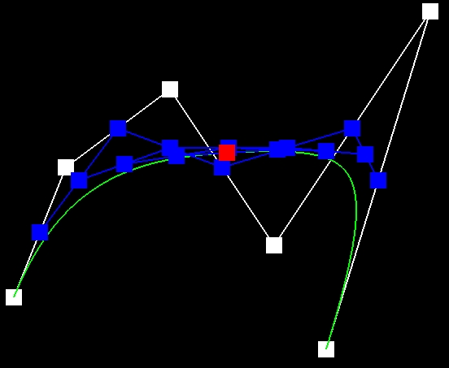
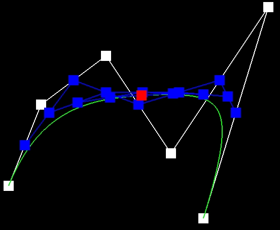

Part 1:Bezier Curves with 1D de Casteljau Subdivision
- de Casteljau algorithm
De Casteljau's algorithm is a method used to evaluate points on a Bezier curve. It recursively divides a set of control points into smaller sets until only one point remains, which represents a point on the Bezier curve.
In our code, we calculating linear interpolations (lerp) between adjacent control points based on a parameter t. - Bezier curve with 6 control points
- Bezier curve
- Changing Bezier curve
Bezier curve with 6 control points


 

Bezier curve
Changing Bezier curve
Changing Bezier curve video